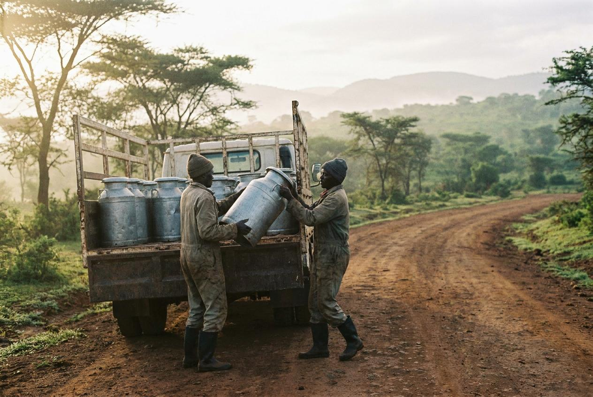

Nine farmers and one cooler
The sacco was registered in 1998 by nine farmers who were selling to a broker at the roadside and losing most of an evening's milk whenever he did not come. They bought one cooler between them and put it at Kiserian.
We now collect on three routes and pay around eight hundred members every month. The cooler at Kiserian is still there. Everything else about how the sacco runs has been rebuilt at least once, and the ledger that used to be a school exercise book is the reason this site exists.

We started with nine farmers and one cooler. The ledger was a school exercise book.
Founded with a passion for sustainable agriculture, our family-owned dairy farm is dedicated to producing the freshest, highest-quality milk while maintaining the utmost standards of animal welfare. Our mission is to nourish our community through honest farming practices, environmental stewardship, and transparent operations from pasture to bottle.
Milk collected twice a day, paid once a month
Ereteti Dairy Sacco has collected milk on the Ngong road since 1998. Around eight hundred farmers deliver to us twice a day, and we pay for every accepted litre once a month.
Any farmer on one of our three routes may join. You need a national ID and a bank account, and you may deliver from the day your membership number is issued.
Where we collect